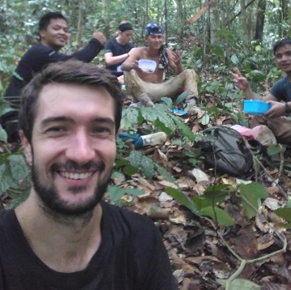
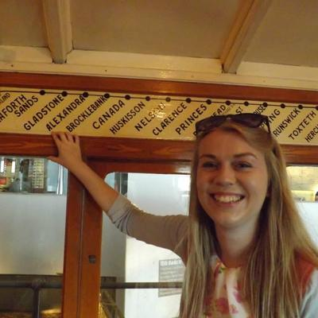
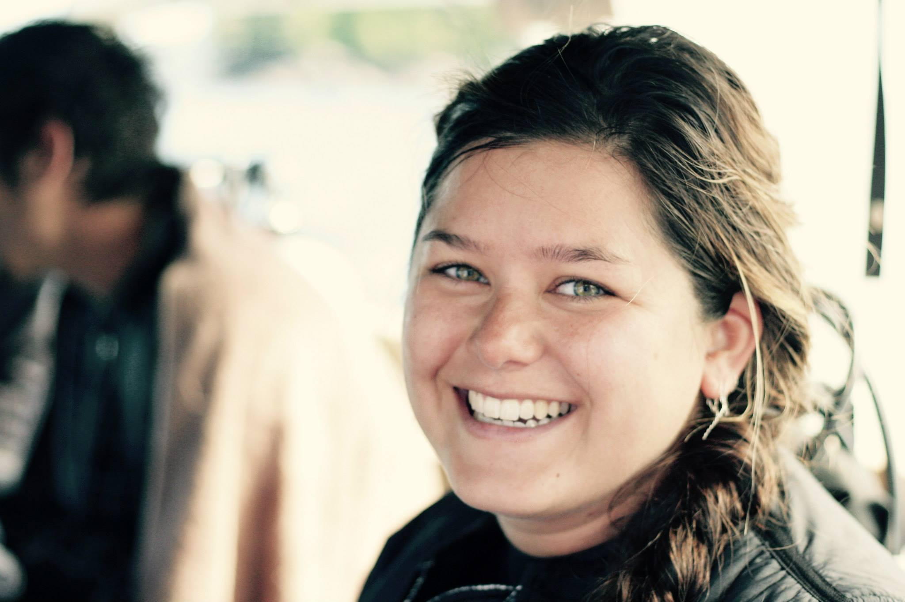
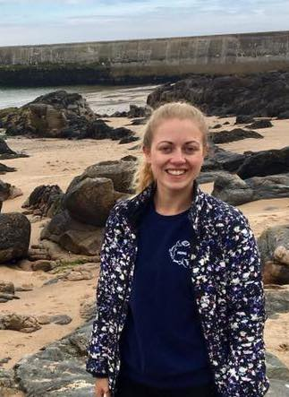
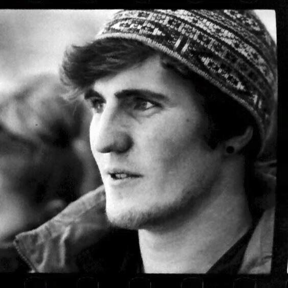
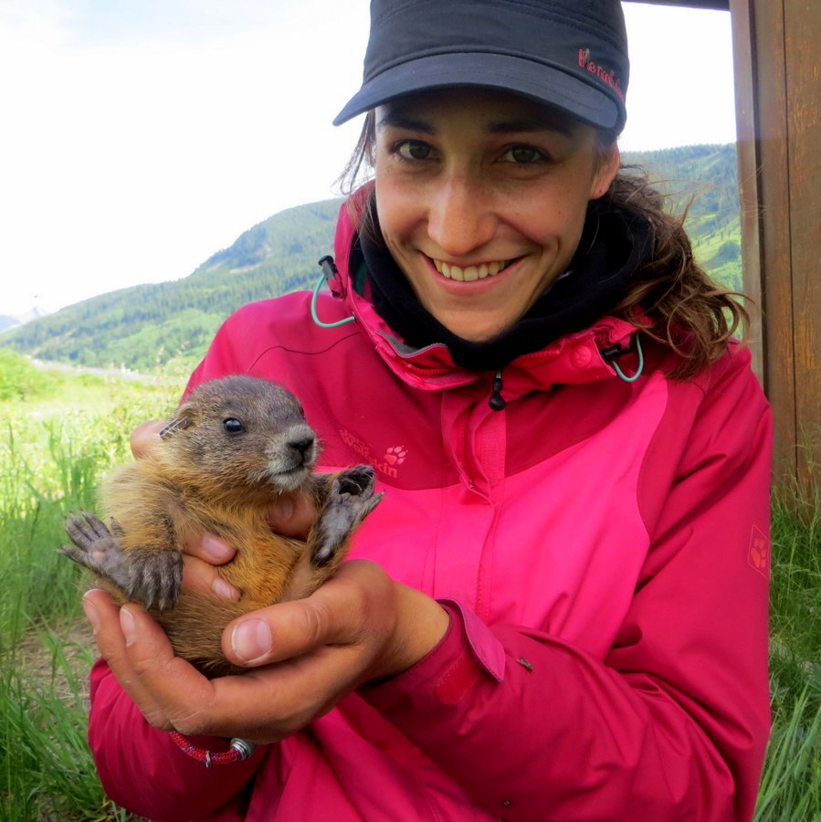
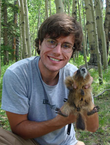

PhD students
- Sol Milne

Using UAV to understand the relation between human disturbance, phenology and orangutanSol Milne uses drones to study the ecology of orangutans and phenological activity of tropical forest. He is currently studying the effect of different land uses on Orangutan population densities forests of in Sabah, Malaysia which are strongly affected by logging and agroforestry practices. He is also using citizen science based identification of orangutan nests from drone images to determine population densities across different land use types. My zooniverse project should be available soon on the official zooniverse website.
- Alexandra Jebb

Contrasting the silverspoon and the predictive adaptive response hypotheses in Yellow-Bellied MarmotAlex is interested in the effects of early-life or maternal environment on the life histories of individuals within a species. She is will be researching this by comparing and contrasting different hypotheses, such as the Silver Spoon Hypothesis and Predictive Adaptive Response Hypothesis, within a long-term study population of Yellow-bellied Marmots in Colorado, U.S.
Master students
- Bethany Stonier Assessing mitigation solution between great skua and planes On Fair Isle
-
Gina Lusardi

UAV and photogrammetry to evaluate sex-ratio and pregancy rate in harbour sealsGina is interested drone imaging and photogrammetry to assess body condition and pregnancy rates in marine mammals. She is currently analysing aerial images of harbour seals to identify pregnant females, differentiate between males and females and to determine overall body condition of the animals.
- Philippa Darbyshirejenkins Microhabitat selection at haul-out sites by harbour seals
- Natalie Ward

Seasonal variation in behaviours and population size in grey seals Halichoerus grypusNatalie is studying how grey seal abundance and behaviour at an estuarine haul-out site varies with season and tidal cycle. She is conducting behavioural observations and regular counts of the seals over a 6-month period, with particular interest in the grey seal breeding and moulting seasons and determining site usage at Newburgh, Aberdeenshire.
Undergraduate students
- Benjamin Wilcok

Personality and reproductive success in pelagic seabirdBenjy has collected a third year of data and added it to two previous undergraduate data sets to investigate personality in the Fulmar population of Eynhallow, Orkney. Looking at behavioral responses to repeated human approaches on nest sites at two periods of the year allowed him to ask whether nest contents among other factors influenced the responses of each bird on an individual level. The results showed repeated behaviors with some inference that personality of inidivduals is effecting the outcome of each approach.
- Mairi Young A Study to Quantifyand Evaluate Human-Induced Disturbance of Grey Seals (Halichoerus grypus), Newburgh, Aberdeenshire
Former students
PhD
- Svenja Kroeger, 2017

Chronological and biological senescence in wild yellow-bellied marmots (Marmota flaviventris)During her PhD, Svenja investigated the causes and consequences of life-history trait variation in relation to senescence, and in the context of different spatio-temporal environments. Specifically, she was looking at senescence in female marmot body mass and reproductive success, and at transgenerational effects of senescence. As part of her PhD, Svenja spent two summers in the Colorado Rocky Mountains to collect data for the yellow-bellied marmot long-term study. She is a marmoteer at heart, and her favourite marmot is Dandelion (aka Dandy), a handsome and bold male whom Svenja named after his fondness for dandelions. Generally, Svenja’s research interests span a broad range of topics, including life-history evolution, senescence, transgenerational effects, phenology, conservation biology and ecology, and sexual selection. Svenja is currently based on Bioko, a small island in the Gulf of Guinea, where she is working with the Bioko Biodiversity Protection Programme (BBPP) and setting up a course to teach R coding to local people.
- Matthew Petelle, 2014

The Causes and Maintenance of Personality in Yellow-bellied Marmots (Marmota flaviventris)Matt did his Ph.D. with Dan Blumstein at the Department of Ecology and Evolutionary Biology at the University of California Los Angeles. He is broadly interested in the diversity of behavior and how it evolved and is maintained, how individual variation affects populations, and finally how behavioral and evolutionary ecology can be used to better implement conservation practices.
MSc projects
- Ailsa Kerr Development of an index to detect pregnancy in marine mammals using aerial images
- Faye Parker Pinniped viewing at seal-haul out locations in Scotland, UK: A summary of public awareness
- Andrew Taylor Behavioural Responses of European Rabbit, Oryctolagus cuniculus, to laser ‘fences’
- Harriet Cole Gender variation in harbour seal microhabitat selection of haul-out locations in Loch Fleet
- Emily Hague Assessing the Potential for Photogrammetric Assessments of Pregnancy in Free-Living Harbour Seals (Phoca vitulina) and Bottlenose Dolphins (Tursiops truncatus)
- Jude Fielding Estimating available timber in white spruce windblown forest using Unmanned Aerial Vehicle
- Luke Venter Using UAVs (Unmanned Aerial Vehicles) to estimate wood lose in windblown forest
- *Timothee Fouqueray Maternal effects and litter composition in yellow-bellied marmots
2017
2016
2015
2013
Honours projects
- Stephen Tapping Personality in a wild pelagic seabird
- Kirsty Orr Personality in a wild pelagic seabird
- Jack Halpin Estimating personality in fulmars
- Meldrum Ryan Investigating the effect of body length on spatial distribution of harbour seals Phoca vitulina at haul out sites
- Robertson Isla Effect of Disturbance on harbour (Phoca vitulina) and grey seals (Halichoerus grypus)
- *Nguyen Kathy Ontogeny of alarm calls in yellow-bellied marmots